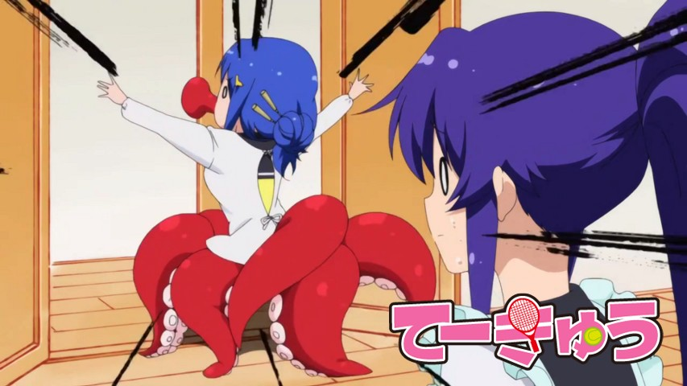

Teekyuu Saison 5 Ep 5 à 8 vostfr

Bonjour,
Voici la suite des aventures de nos lycéennes. Accrochez-vous bien, le délire continue!
Je vous préviens aussi de possibles retards car je suis malade, et je risque de faire du travail peu...